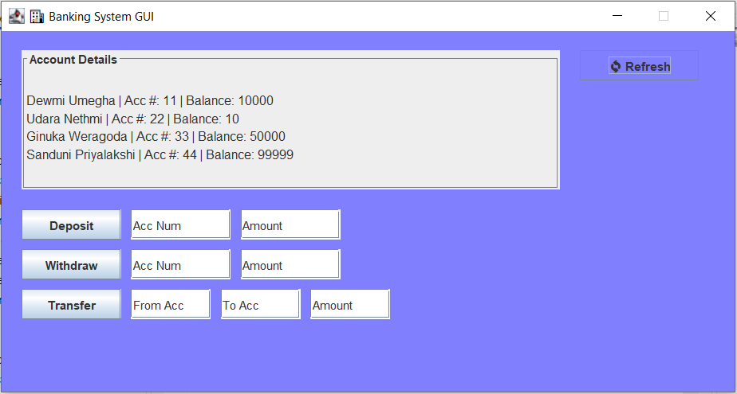
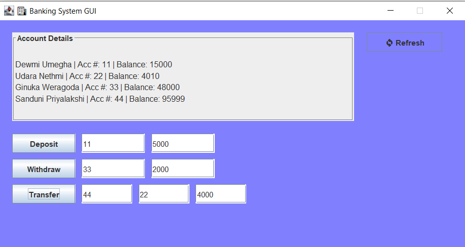

Introduction to Object-Oriented Programming
Java Banking System
📋 Project Overview
The Java Banking System is a desktop application built with Java Swing that simulates core banking operations. Account data is loaded from a CSV file at startup, and all changes — deposits, withdrawals, transfers — are reflected live in the GUI table. The project demonstrates strong OOP principles including inheritance, encapsulation, and abstraction.
Java Classes
Operations
Data Storage
Architecture
⚙️ Features
View Accounts
Display all holders with names, account numbers, and live balances in a Swing JTable.
Deposit
Add funds to any account using an account number lookup with instant balance update.
Withdraw
Deduct funds with balance validation and error handling for insufficient funds.
Transfer
Move funds between two accounts atomically via the dedicated Transaction class.
CSV Loading
Reads account data from Accounts.csv at startup with a graceful fallback on file error.


📄 CSV Data Format
Account data is stored in Accounts.csv. Each line represents one account: FirstName, LastName, AccountNumber, Balance.
At startup, ReadAccounts parses this file into four LinkedList collections, which are then used to build the Account[] array passed to the GUI.
🎓 OOP Concepts Applied
🧬 Inheritance
Account extends Customer to reuse name fields and accessor methods without code duplication.
🔒 Encapsulation
All fields are declared private. Public getters and setters control access, protecting data integrity.
🎭 Abstraction
The Transaction class hides transfer logic from the GUI layer — the GUI just calls transfer() without knowing the internals.
⚡ Event-Driven
Inner HandlerClass implements ActionListener for all buttons, keeping event logic close to the UI it serves.
🔗 Links
GitHub Repository: github.com/dewmiumegha-lab